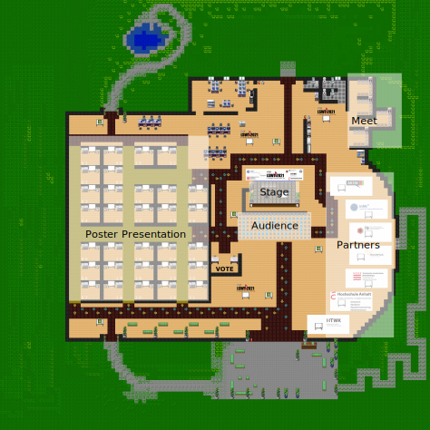

<div>
  
</div>
<div style="display: flex; align-items: center;">
  
  <span style="font-size: 26px;"> - navigates to Poster Presentations</span>
  <span style="width:60px"></span>
  
  <span style="font-size: 26px;"> - navigates to the Stage</span>
</div>
